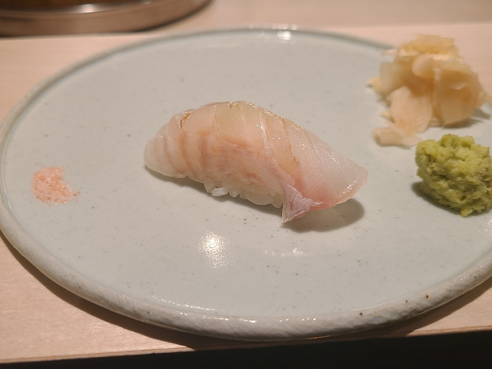

홍릉수목원서울특별시 동대문구 청량리동에 위치한 수목원. 평일에는 국립산림과학원의 임업 시험장으로서 식물 연구 업무를 하며 토요일과 일요일에 한하여 수목원으로서 일반인에게 개방된다. 평점 4.4/5 |
세종대왕기념관서울특별시 동대문구 청량리동에 위치한 기념관. 조선 세종의 성덕과 위업을 추모하여 이를 길이 보존하기 위해 지어졌다. 지하 1층, 지상 2층의 현대식 건물로, 전시실, 강당, 연구실, 자료준비실 등이 갖추어져 있으며, 전시관은 한글실, 과학실, 국악실, 일대기실, 옥외 전시로 구성된다. 평점 3.7/5 |
서울풍물시장서울특별시 동대문구 신설동에 위치한 시장. 생활용품, 관광상품, 토속상품, 민속 먹거리 등 민족 고유의 풍물과 실생활에 사용했던 물건들, 즐겨 먹었던 음식 등이 어우러진 곳이다. 평점 3.9/5 |
경동시장서울 동대문구에 있는 재래시장. 대구약령시를 제치고 한국 최대의 한약재 시장이 된 것으로 유명하다. 청량리역과 제기동역에 걸쳐 광범위하게 있으며 대한민국 한약재의 70% 정도를 공급하고 있다. 평점 4.1/5 |
제기동약령시장국내 최대의 한의약 종합 단지. 800여 개가 넘는 한약 관련 점포를 확보하고 있다. 각종 민간 요법에 등장하는 개구리, 자라, 민물새우 등 희귀한 약재도 구입할 수 있다. 저렴한 가격은 물론, 마치 시골 장터에 온 듯 구경하는 재미까지 더해진다. 평점 4.0/5 |
시키카츠서울특별시 동대문구 회기로 110 추천메뉴 : 모듬카츠 평점 4.7/5 |
육전식당서울특별시 동대문구 난계로30길 16 추천메뉴 : 통목살 평점 4.4/5 |
어머니대성집서울특별시 동대문구 왕산로11길 4 추천메뉴 : 해장국 평점 4.4/5 |
 |
스시코야서울특별시 동대문구 황물로 42 1F 추천메뉴 : 디너 코스 평점 4.4/5 |
 |
나정순할매쭈꾸미서울특별시 동대문구 무학로 144 추천메뉴 : 쭈꾸미 볶음 평점 4.4/5 |